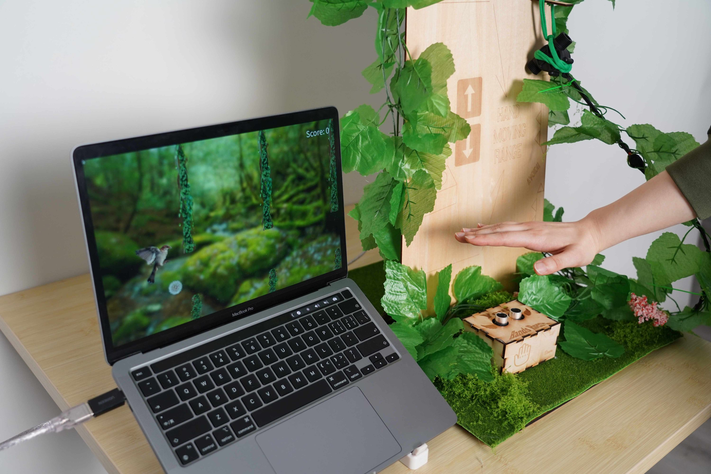
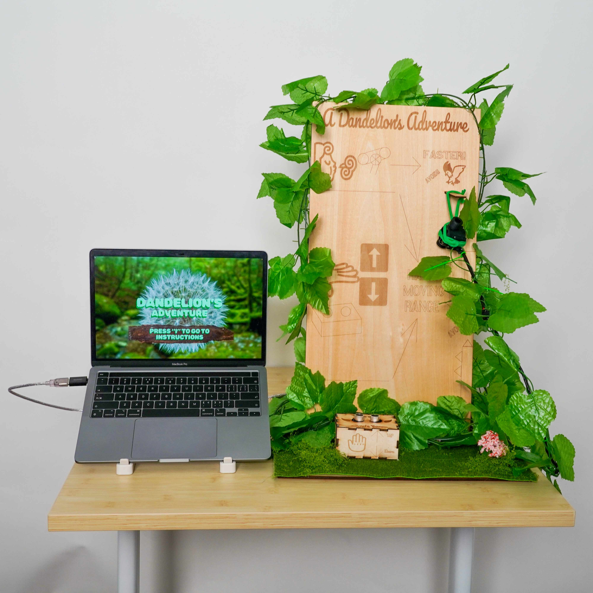

Project Overview
A Dandelion's Adventure is a game project inspired by Flappy Bird.
In this game, a player controls a floating dandelion through vines with hand movement and blowing. Meanwhile, a bird chases from behind.
The purpose is to let the audience immerse themselves in the attractive game and isolate themselves from the stress outside the world.

Interaction and Controls
We measured hand height by an ultrasonic sensor, and mapped it to the dandelion's vertical position.
We also measured flow change by a flow sensor and mapped it to speed boost.
The game runs in Processing. Arduino streams analog readings via serial.

Fabrication and Aesthetics
We laser-cut a stage to put sensors.
Also, we engraved concise instructions on wood planks and decorated the scene with artificial leaves and grass.
Digital art uses real images, including dandelion, vines, bird, which achieves a warm, poetic forest vibe.
